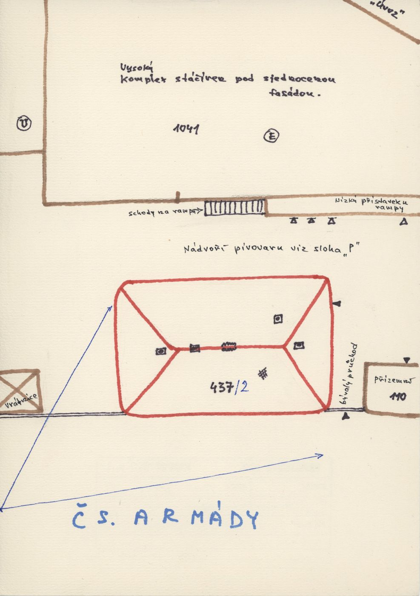
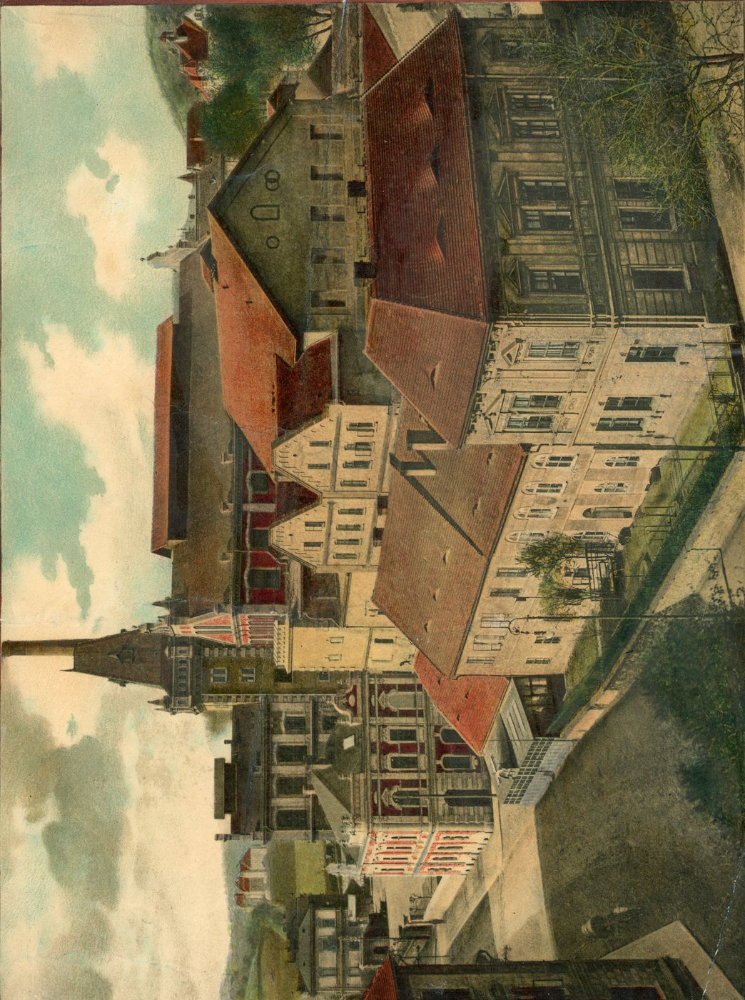
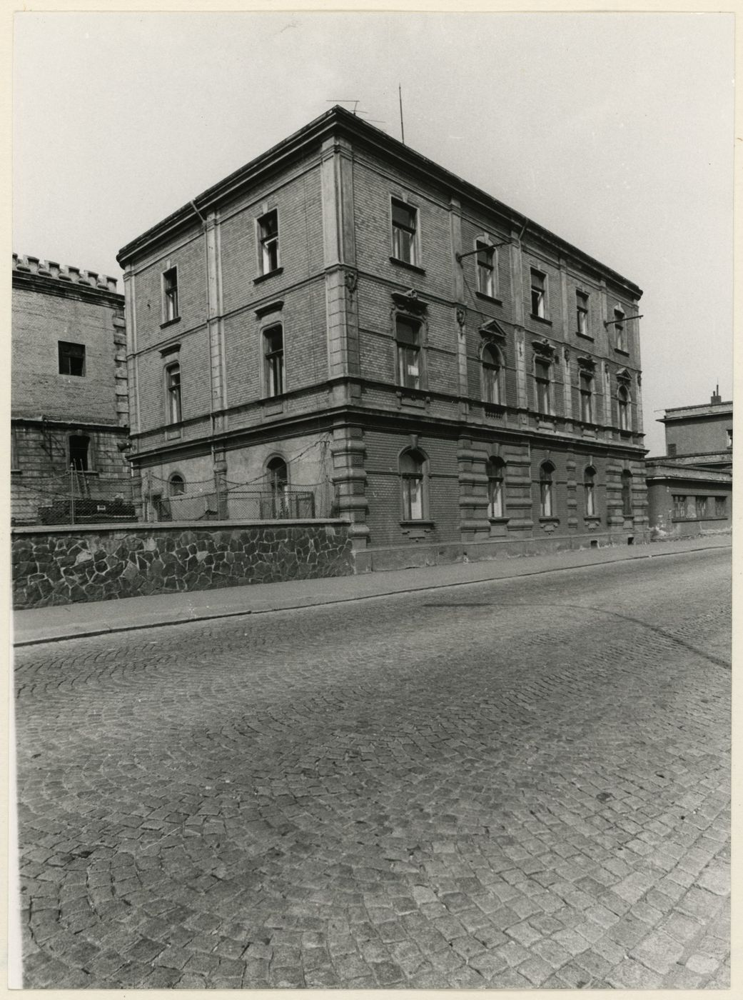
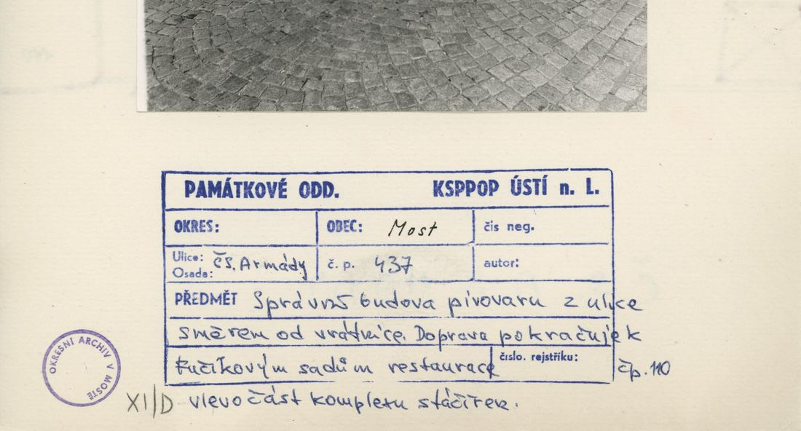
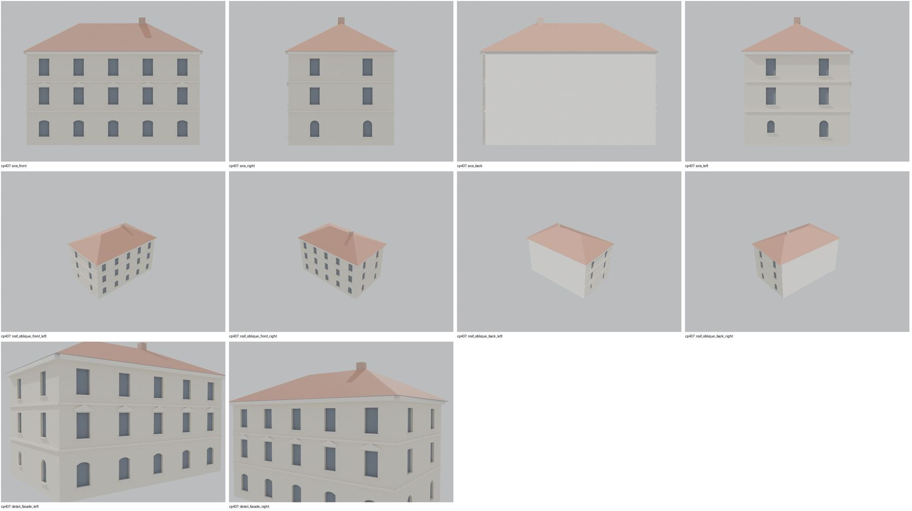
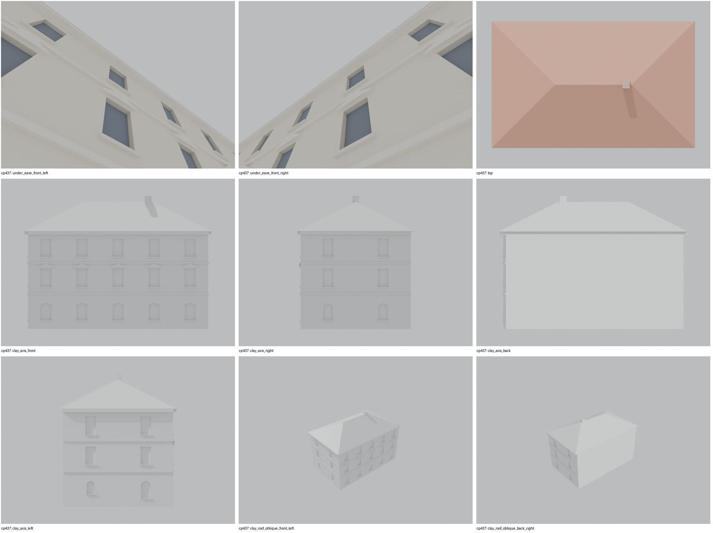
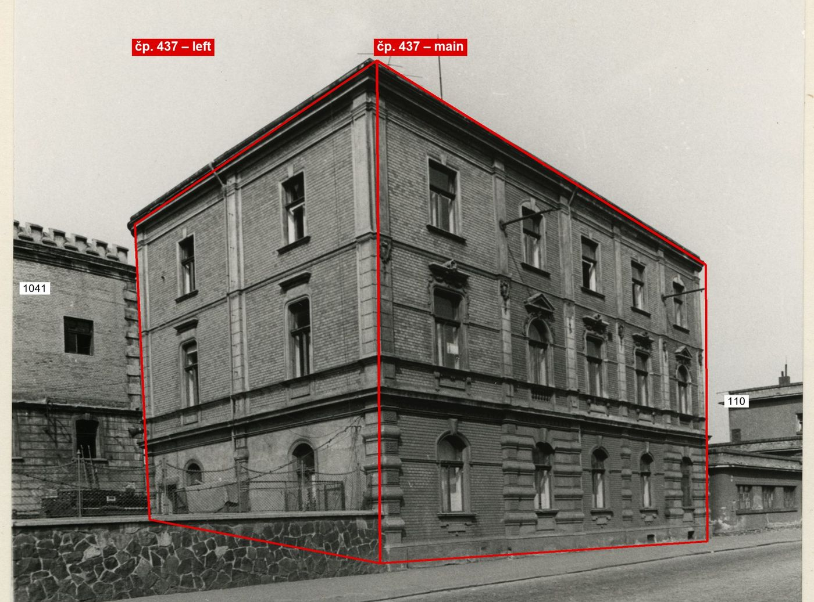

Identita domu
Samostatný třípodlažní dům s valbovou střechou v nádvoří pivovaru mezi vrátnicí a přízemní částí 110 (plán cp_437_001: „bývalý průchod“ k 110). Foto cp_437_001: nárožní pohled, bosované přízemí, 5 os na delší straně, 3 osy na kratší, komín.
Použité prameny: cp_437_001 PLANE; cp_437_001 PHOTO; FOTO-000150 (pohlednice).
GIS: GIS id 1506 (266 m², obdélník 20,9 × 12,8 m). V oblasti „Cs_Armady“ je dům veden podruhé se stejnými přílohami.
Prameny (4 příloh)
Všechny přílohy domu v databázi Libuše, každá otevřená a zapsaná v plan_search.json. Stav rešerše plánů: found; situační/střešní náčrt (ruční, nekótovaný, PLANE,BW) – není stavební výkres; půdorysné rozměry z GIS nebo odhad. Kliknutím otevřete větší náhled.


situační náčrt
SHA-256 59e70a1e9460…


fotografie
SHA-256 6e26ed1120db…


fotografie
SHA-256 a3ead86430f3…


archivní karta (rub) · výřez textu
SHA-256 aca07ad7e3a8…
Model
| Revize modelu | r4 (zachované revize: r1, r2, r4) |
|---|---|
| Poloha | GIS půdorys id 1506 |
| Šířka průčelí | 20,98 m |
| Výška okapu | 11,40 m (odhad) |
| Podlaží | 3 |
| Střecha podle pramenů | valba |
| Střecha v modelu | valbová / sedlová (hřeben, valby, štíty) |
| Otvory | 27 |
| Vikýře / vedlejší hmoty | 0 / 0 |
| Polygonů | 570 |
Zdroje rozměrů, jak jsou zapsány v plánu modelu
| Rozměry | GIS id 1506 rectangle 20.98 x 12.78 m |
|---|---|
| Průčelí | photo cp_437_001: 3 storeys, rusticated ground floor, 5 axes long side, 3 axes short side, hipped roof, chimney |
| Střecha | hip (photo); pitch estimate |
Kontrola r4: brána geometrie a 19 pohledů
Automatická brána (uzavřené podkroví, krytí střechou, UV, síť, počty otvorů proti fotografii s rámečkem) a 19 renderů: čtyři osy, čtyři šikmé pohledy na střechu, dva detaily průčelí, dva pohledy pod přední okap, pohled shora a šest pohledů bez barev materiálů. Stav: prošla.


Nálezy a opravy
- osy a kordony sedí s rámečkem cp_437_001
- zadní a pravá strana bez otvorů/zrcadlo = hypotéza
- pod okapem uzavřeno
Revize r4: doklad fasád a změny
Okna a dveře se počítají na fotografii s červeným rámečkem po dělicích zdech domu. Řádky oken jsou zdola nahoru; „hypotéza“ jsou otvory, které na snímku vidět nejsou.
| Fasáda | Okna po podlažích | Hypotéza (id otvorů) | Poznámka |
|---|---|---|---|
| main | 5 / 5 / 5 | – | uliční průčelí, 5 os ve všech třech podlažích, bez vstupu |
| left | 2 / 2 / 2 | – | levá kratší strana: 2 osy, střední lizéna; v přízemí dvě okna s půlkruhovým záklenkem (zadní menší) |
| right | – | RG1, RG2, RU1, RU2, RT1, RT2 | zrcadlo levé strany = hypotéza |


karta: Správní budova pivovaru z ulice směrem od vrátnice, doprava 110, vlevo stáčírna (1041). Delší strana = uliční průčelí (5 os ve 3 podlažích), viditelná kratší strana je LEVÁ (2 osy, střední lizéna); pravá kratší strana na žádném snímku není.
Změny proti r2/r3
- closed attic, eave closures, gables along the roof underside, flat-roof covering slab, names for tools/most_qa (z4_post.py)
- facade evidence (framed photo cp_437_001): the visible short side is the LEFT one with 2 axes per storey and a middle pilaster (r2 put 3 axes on the right side, which no photo shows); left side added from the photo, right side reduced to a 2-axis mirror = hypothesis
Hypotézy
Vše níže je model_hypothesis, provisional, locked: false.
- delší (5osá) strana přiřazena k ulici podle GIS hrany
- výšky podlaží odhad
- entrance not visible on the street side; no door modelled
- all storey heights, opening sizes and roof pitches are estimates from photographs (model_hypothesis, provisional, locked=false)
Soubory
- Model čp. 437, GLB
- Pracovní složka: F:\MOST\output\zatecka_street_claude_2026-10-17\houses\cp437\
plan_search.json,geometry_plan.json,README.md,texture_handoff_spec.json,r4/cp_437_G_r4.blend,r4/qa/qa_review.json, rámečkyframes/cp437_*